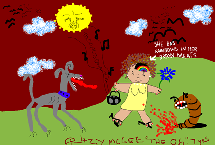
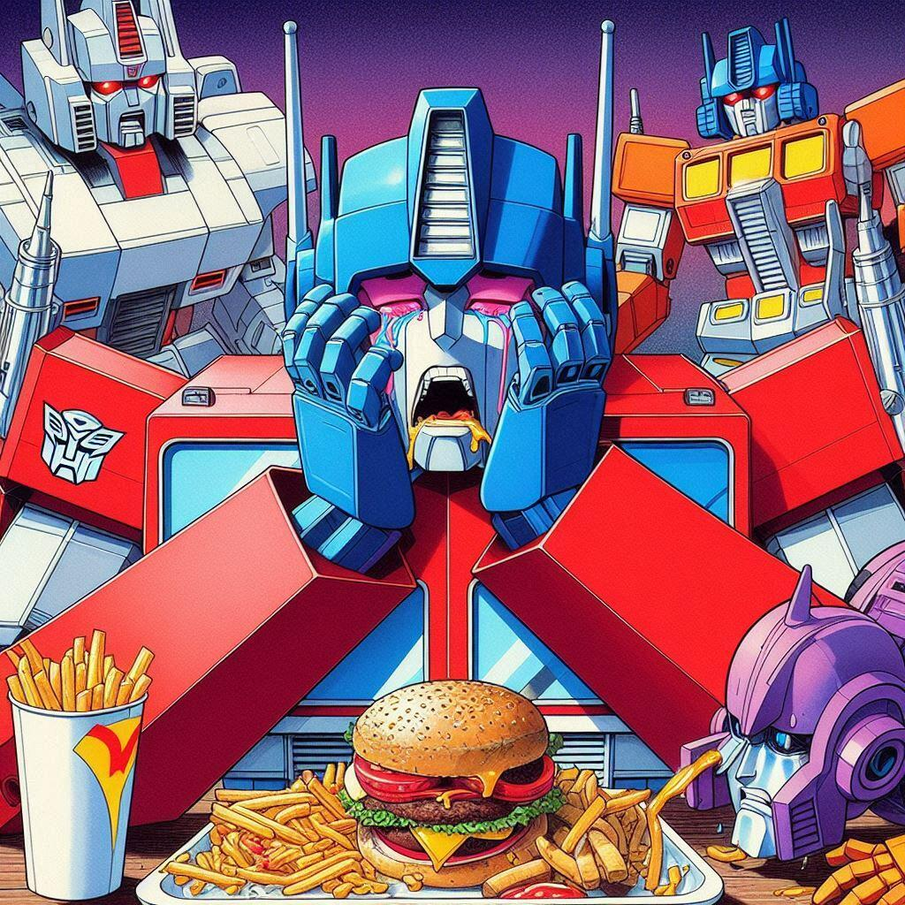

No One in This Family Eats Pepper


Related posts

Humanzee Memoir Published: Courts to Decide Who Can Profit from This Love Story
Oliver, the human-chipmanzee hybrid who died in 2012 was more intelligent than was previously thought. A recent memoir was purportedly…

Rainbows In Her Brain Meats
Once again we are graced with a reader's submission from 7 year old Fritzy McGee. Fritzy writes: "Sometimes when I…

Optimus Overeats
A lot of artists hate AI. I get it. But what artist is going to spend days and days drawing…